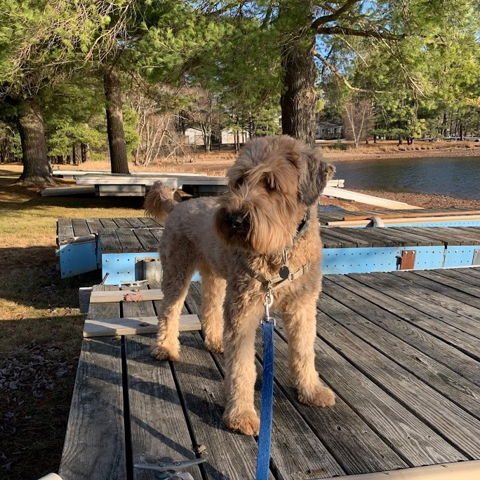

A snow day during my third year at the University of St Andrews.

I spend most of my time finding new recipes to try.

But when I'm not cooking, I love being outdoors.

❮
❯
And most of all, I love dogs! (This is my wheaten terrier, Finn).